Artifacts
These are the decision artifacts I use to help product teams move from ambiguity to shipped work — especially in complex workflows and Human+AI experiences.
You’ll see the tools that make a product easier to use and easier to build: journey and workflow maps, annotated wireframes, system-minded UI, and interactive prototypes. They exist for one reason: reduce thrash, surface tradeoffs, and make the next step obvious.
Information Architecture & Workflows
Site maps, workflows, and annotated structures that clarify navigation, logic, and hierarchy.
Used to align Product + Engineering, expose edge cases, and reduce build churn.
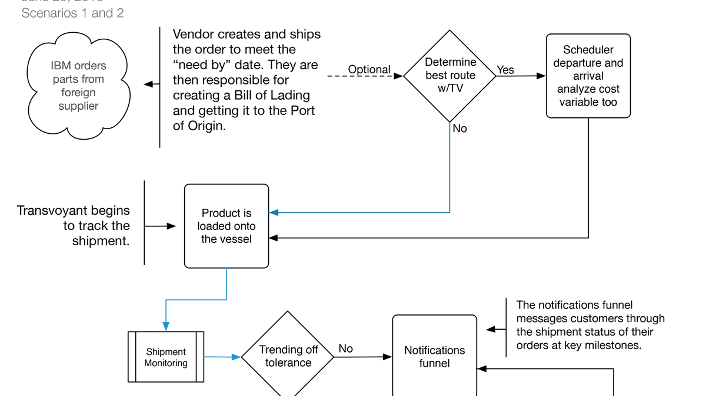
Visualizing how global shipments move from order to delivery — transforming a complex logistics process into a clear, actionable workflow.
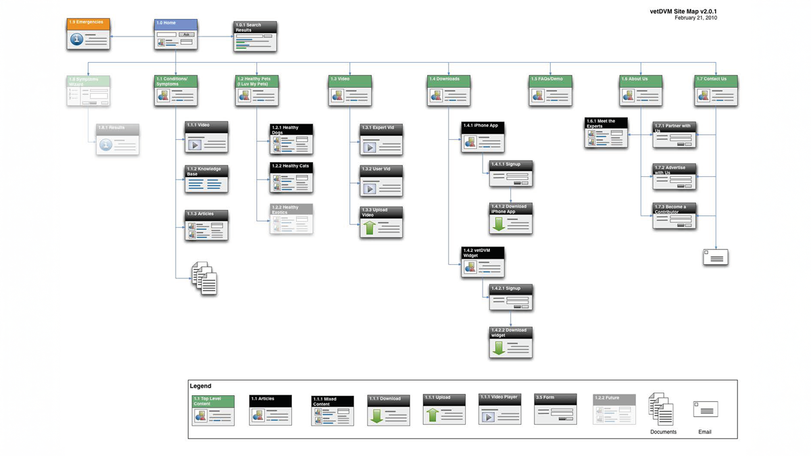
Mapping a complete site ecosystem for VetMD — organizing behavioral data, navigation, and content into a scalable, user-centered structure.
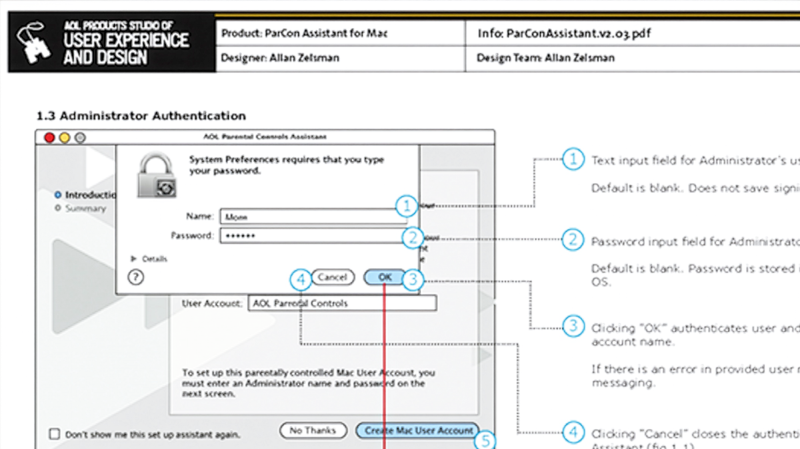
Early enterprise UX documentation — defining interaction logic, error states, and accessibility patterns long before “design systems” were standard practice.
Wireframes
Used to clarify states, edge cases, and interaction intent before high-fidelity design.
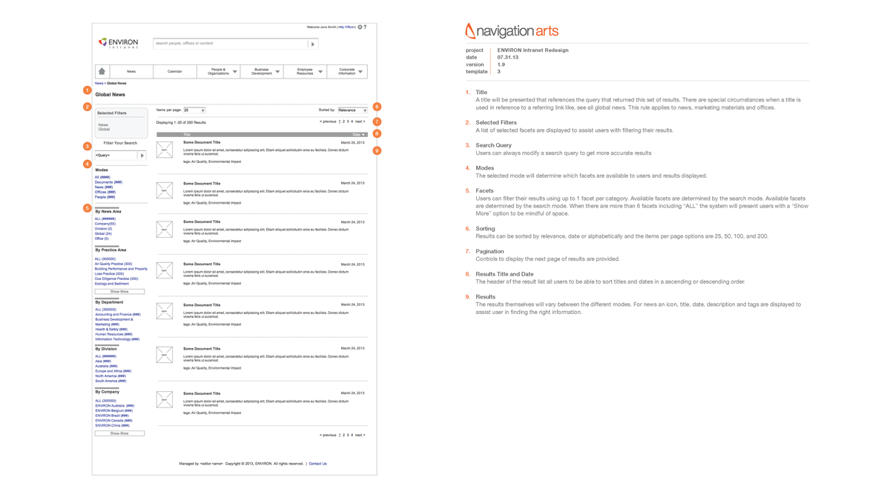
Annotated wireframes defining navigation, content hierarchy, and internal communication workflows for the Environ enterprise portal.
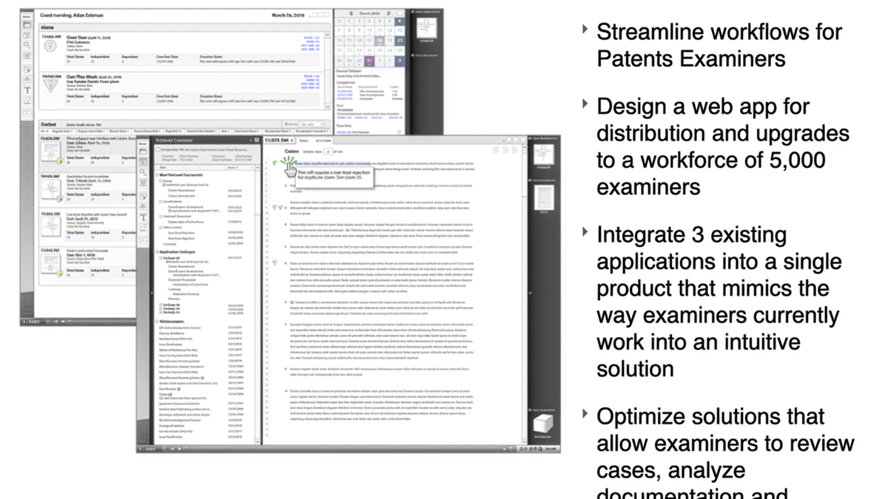
Wireframes outlining examiner dashboards, document review, and task management flows for the U.S. Patent & Trademark Office.
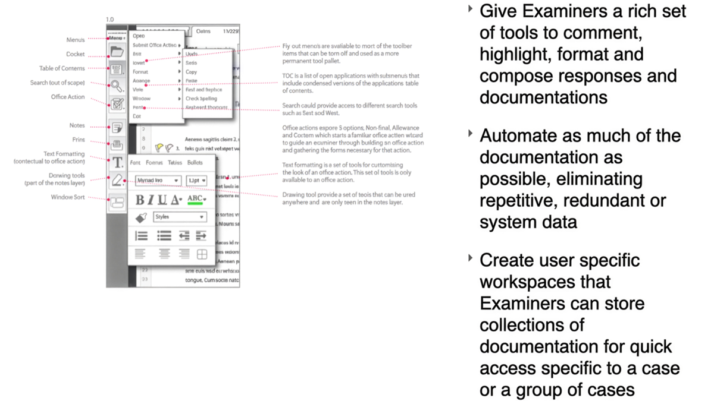
Detailed wireframes illustrating examiner annotation, commenting, and documentation features within complex review workflows.
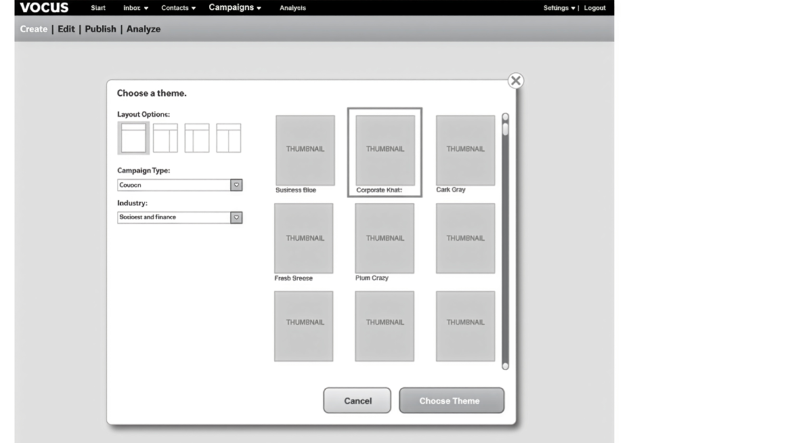
Low-fidelity wireframes defining campaign creation, layout selection, and reusable content modules for the Vocus marketing suite.
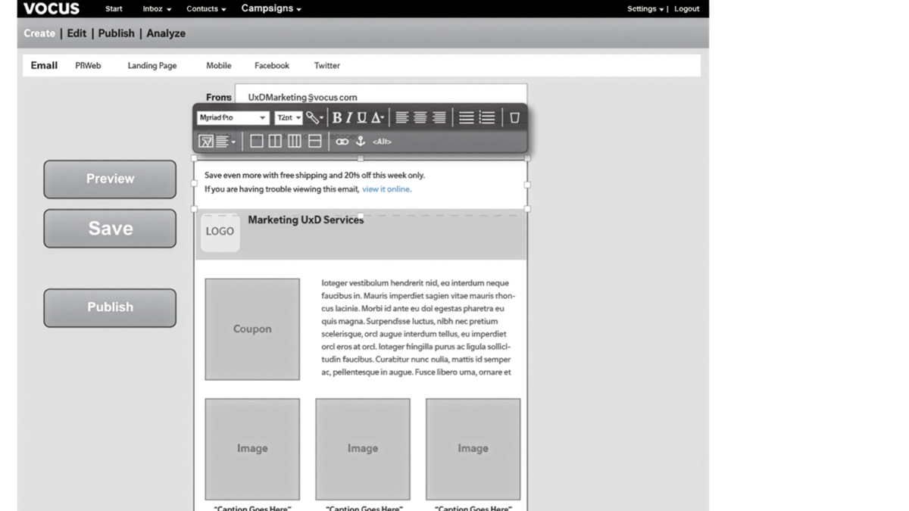
Wireframes for the content authoring interface — showing block-based composition, editing controls, and preview flows.
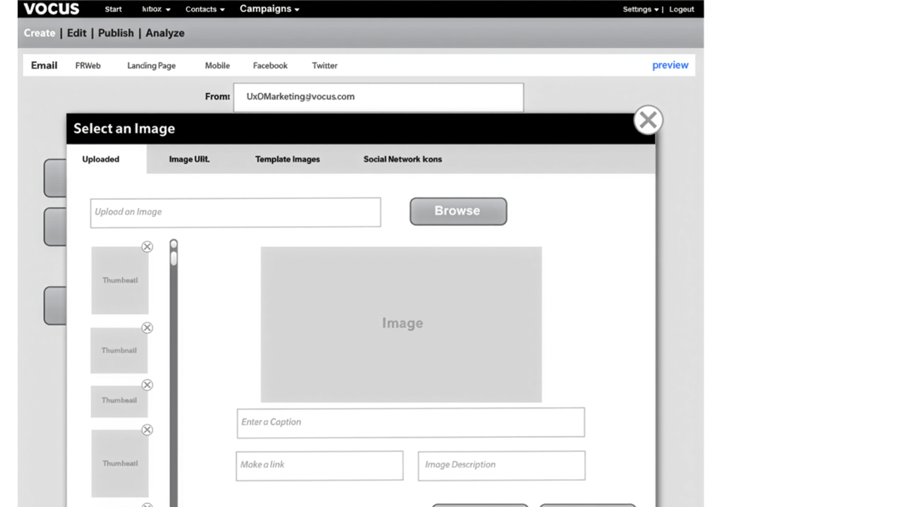
Wireframes depicting the image and asset upload process, including metadata fields and content library integration.
Visual Design
High-fidelity UI and design system-minded layouts showing hierarchy, accessibility, and polished visual craft.
Used to demonstrate hierarchy, accessibility, and scalable patterns (not just polish).
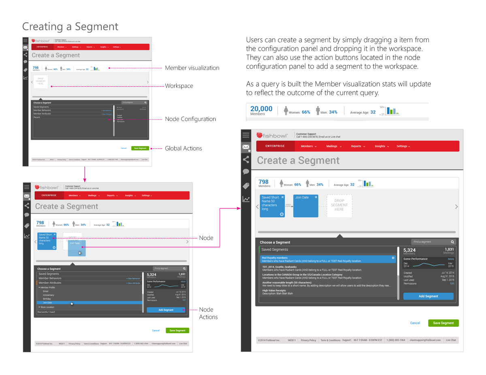
Visual design for the Fishbowl platform’s audience segmentation tool, illustrating drag-and-drop targeting and configuration workflows.
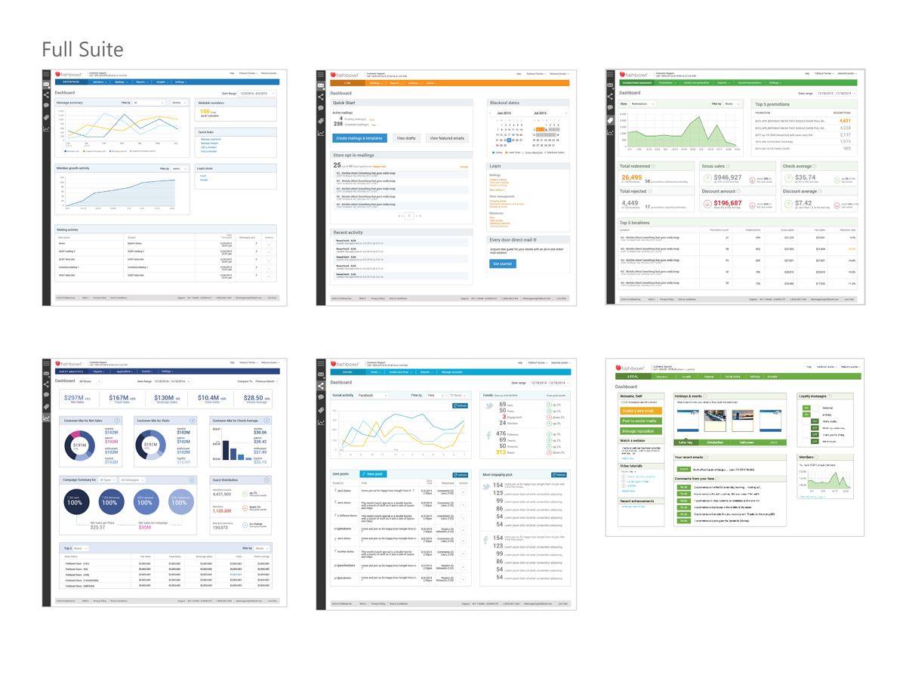
Overview of the full Fishbowl marketing suite, including analytics, campaign management, and reporting dashboards.
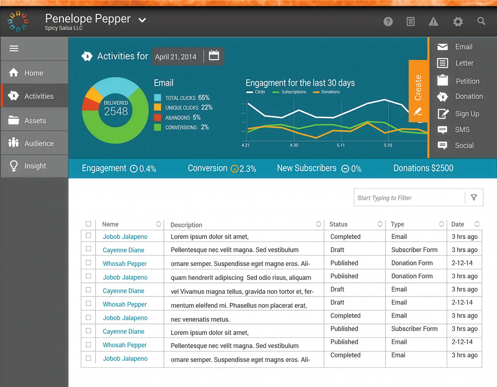
High-contrast data dashboard for campaign performance, showing engagement trends and key conversion metrics.
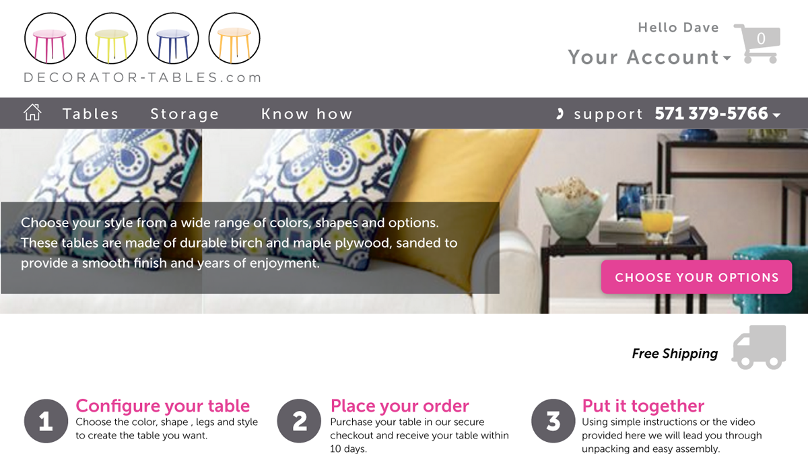
Responsive website design for a custom furniture company, guiding customers through configuration, ordering, and delivery options.
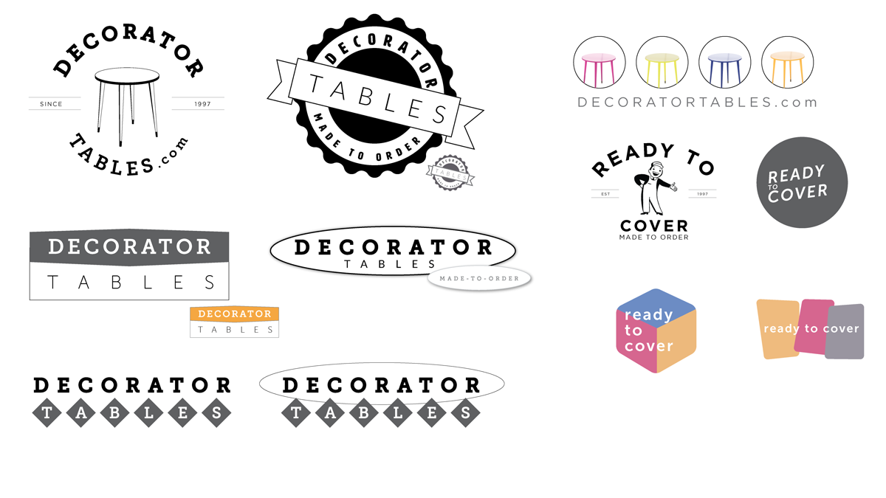
Logo and branding exploration for Decorator Tables — exploring typography, color systems, and product mark variations.
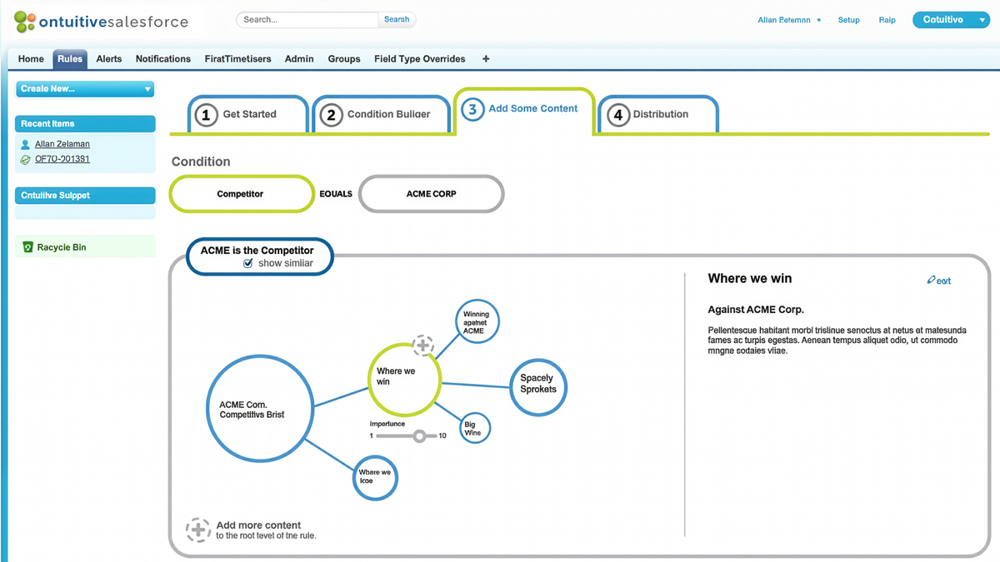
Interface design for Ontuitive, a Salesforce plugin delivering contextual guidance and performance insights for sales professionals.
Interaction
Interactive prototypes and motion studies that validate flows, communicate intent, and de-risk build decisions.
Used to validate flows, communicate intent, and de-risk implementation decisions.
Interactive logistics prototype visualizing shipment tracking, route optimization, and event-driven alerts.
Interactive prototype for global emergency response coordination, visualizing live distress signals and alert pathways.
Transaction workflow prototype illustrating unified financial dashboards, guided navigation, and cross-department collaboration.
High-fidelity eCommerce demo showing a responsive product configurator for custom furniture — optimized for tablet and mobile interaction.
Interactive workflow prototype for managing acquisition tasks, approvals, and milestones in a visual board layout.
Security orchestration prototype visualizing alerts, automation rules, and remediation workflows for enterprise IT teams.
Interactive prototype for a point-of-sale system, visualizing store management, product grouping, and tax configuration workflows.
High-fidelity workflow prototype for coordinating acquisition tasks, team approvals, and progress tracking.
Physical product prototype demonstrating air flow and form testing for turbine design research.